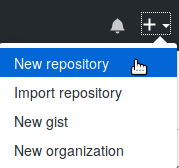

vignettes/wflow-01-getting-started.Rmd
wflow-01-getting-started.RmdThe workflowr R package helps scientists organize their research in a way that promotes effective project management, reproducibility, collaboration, and sharing of results. Workflowr combines literate programming (knitr and rmarkdown) and version control (Git, via git2r) to generate a website containing time-stamped, versioned, and documented results. Any R user can quickly and easily adopt workflowr.
This tutorial assumes you have already followed the installation instructions. Specifically, you need to have R, pandoc (or RStudio), and workflowr installed on your computer. Furthermore, you need an account on GitHub or GitLab.
A workflowr project has two key components:
An R Markdown-based website. This consists of a configuration
file (_site.yml), a collection of R Markdown files, and
their corresponding HTML files.
A Git repository. Git is a version control system that helps track code development1. Workflowr is able to run the basic Git commands, so there is no need to install Git prior to using workflowr.
One of the main goals of workflowr is to help make your research more transparent and reproducible. This is achieved by displaying multiple “reproducibility checks” at the top of each analysis, including the unique identifier that Git assigns a snapshot of your code (or “commit” as Git calls it), so you always know which version of the code produced the results.
To start a new project, open R (or RStudio) and load the workflowr package (note that all the code in this vignette should be run directly in the R console, i.e. do not try to run workflowr functions inside of R Markdown documents).
library("workflowr")
## This is workflowr version 1.7.2
## Run ?workflowr for help getting startedIf you have never created a Git repository on your computer before, you need to run the following command to tell Git your name and email. Git uses this information to assign the changes you make to the code to you (analogous to how Track Changes in a Microsoft Office Word document assigns your changes to you). You do not need to use the exact same name and email as you used for your account on GitHub or GitLab. Also, you only need to run this command once per computer, and all subsequent workflowr projects will use this information (you can also update it at any time by re-running the command with different input).
# Replace the example text with your information
wflow_git_config(user.name = "Your Name", user.email = "email@domain")Now you are ready to start your first workflowr project!
wflow_start("myproject") creates a directory called
myproject/ that contains all the files to get started. It
also changes the working directory to myproject/2 and
initializes a Git repository with the initial commit already made.
wflow_start("myproject")## wflow_start:
## - New directory created at /tmp/RtmpkAg0Kw/wflow-01-getting-started-1b5167f01098/myproject
## - Project name is "myproject"
## - Working directory changed to /tmp/RtmpkAg0Kw/wflow-01-getting-started-1b5167f01098/myproject
## - Git repo initiated at /tmp/RtmpkAg0Kw/wflow-01-getting-started-1b5167f01098/myproject
## - Files were committed in version f8f60e3wflow_start() created the following directory structure
in myproject/:
myproject/
├── .gitignore
├── .Rprofile
├── _workflowr.yml
├── analysis/
│ ├── about.Rmd
│ ├── index.Rmd
│ ├── license.Rmd
│ └── _site.yml
├── code/
│ ├── README.md
├── data/
│ └── README.md
├── docs/
├── myproject.Rproj
├── output/
│ └── README.md
└── README.mdAt this point, you have a minimal but complete workflowr project; that is, you have all the files needed to use the main workflowr commands and publish a research website. Later on, as you get more comfortable with the basic setup, you can modify and add to the initial file structure. The overall rationale for this setup is to help organize the files that will be commonly included in a data analysis project. However, not all of these files are required to use workflowr.
The two required subdirectories are
analysis/ and docs/. These directories should
never be removed from the workflowr project.
analysis/: This directory contains all the source R
Markdown files for implementing the data analyses for your project. It
also contains a special R Markdown file, index.Rmd, that
does not contain any R code, but will be used to generate
index.html, the homepage for your website. In addition,
this directory contains the important configuration file
_site.yml, which you can use to edit the theme, navigation
bar, and other website aesthetics (for more details see the
documentation on R
Markdown websites). Do not delete index.Rmd or
_site.yml.docs/: This directory contains all the HTML files for
your website. The HTML files are built from the R Markdown files in
analysis/. Furthermore, any figures created by the R
Markdown files are saved here. Each of these figures is saved according
to the following pattern:
docs/figure/<insert Rmd filename>/<insert chunk name>-#.png,
where # corresponds to which of the plots the chunk
generated (since one chunk can produce an arbitrary number of plots)3.The workflowr-specific configuration file is
_workflowr.yml. It will apply the workflowr reproducibility
checks consistently across all your R Markdown files. The most critical
setting is knit_root_dir, which determines the directory
where the files in analysis/ will be executed. The default
is to execute the code in the root of the project where
_workflowr.yml is located (i.e. "."). To
instead execute the code from analysis/, change the setting
to knit_root_dir: "analysis". See ?wflow_html
for more details.
Also required is the RStudio project file, in this example
myproject.Rproj. Even if you are not using RStudio, do not
delete this file because the workflowr functions rely on it to determine
the root directory of the project.
The optional directories are data/,
code/, and output/. These directories are
suggestions for organizing your data analysis project, but can be
removed if you do not find them useful.
data/: This directory is for raw data
files.
code/: This directory is for code that might not be
appropriate to include in R Markdown format (e.g. for pre-processing the
data, or for long-running code).
output/: This directory is for processed data files
and other outputs generated from the code and data. For example, scripts
in code/ that pre-process raw data files from
data/ should save the processed data files in
output/.
The .Rprofile file is a regular R script that is run
once when the project is opened. It contains the call
library("workflowr"), ensuring that workflowr is loaded
automatically each time a workflowr-project is opened.
You will notice that the docs/ directory is currently
empty. That is because we have not yet generated the website from the
analysis/ files. This is what we will do next.
To build the website, run the function wflow_build() in
the R console:
## Current working directory: /tmp/RtmpkAg0Kw/wflow-01-getting-started-1b5167f01098/myproject
## Building 3 file(s):
## Building analysis/about.Rmd
## Building analysis/index.Rmd
## Building analysis/license.Rmd
## Summary from wflow_build
##
## Settings:
## make: TRUE combine: "or"
##
## The following were built externally each in their own fresh R session:
##
## docs/about.html
## docs/index.html
## docs/license.html
##
## Log files saved in /tmp/RtmpkAg0Kw/workflowrThis command builds all the R Markdown files in
analysis/ and saves the corresponding HTML files in
docs/. It sets the same seed before running every file so
that any function that generates random data (e.g. permutations) is
reproducible. Furthermore, each file is built in its own external R
session to avoid any potential conflicts between analyses
(e.g. accidentally sharing a variable with the same name across files).
Lastly, it displays the website in the RStudio Viewer or default web
browser.
The default action of wflow_build() is to behave similar
to a Makefile
(make = TRUE is the default when no input files are
provided), i.e. it only builds R Markdown files that have been modified
more recently than their corresponding HTML files. Thus if you run it
again, no files are built (and no files are displayed).
wflow_build()
## Summary from wflow_build
##
## Settings:
## make: TRUE combine: "or"
##
## No files to buildTo view the site without first building any files, run
wflow_view(), which by default displays the file
docs/index.html:
This is how you can view your site right on your local machine. Go
ahead and edit the files index.Rmd, about.Rmd,
and license.Rmd to describe your project. Then run
wflow_build() to re-build the HTML files and display them
in the RStudio Viewer or your browser.
workflowr makes an important distinction between R Markdown files
that are published versus unpublished. A published file is included in
the website online; whereas, the HTML file of an unpublished R Markdown
file is only able to be viewed on the local computer. Since the project
was just started, there are no published files. To view the status of
the workflowr project, run wflow_status().
wflow_status()
## Status of 3 Rmd files
##
## Totals:
## 3 Unpublished
##
## The following Rmd files require attention:
##
## Unp analysis/about.Rmd
## Unp analysis/index.Rmd
## Unp analysis/license.Rmd
##
## Key: Unp = Unpublished
##
## The current Git status is:
##
## status substatus file
## unstaged modified analysis/about.Rmd
## unstaged modified analysis/index.Rmd
## unstaged modified analysis/license.Rmd
##
## To publish your changes as part of your website, use `wflow_publish()`.
## To commit your changes without publishing them yet, use
## `wflow_git_commit()`.This alerts us that our project has 3 R Markdown files, and they are
all unpublished (“Unp”). Furthermore, it instructs how to publish them:
use wflow_publish(). The first argument to
wflow_publish() is a character vector of the R Markdown
files to publish 4. The second is a message that will be
recorded by the version control system Git when it commits (i.e. saves a
snapshot of) these files. The more informative the commit message the
better (so that future you knows what you were trying to
accomplish).
wflow_publish(c("analysis/index.Rmd", "analysis/about.Rmd", "analysis/license.Rmd"),
"Publish the initial files for myproject")## Current working directory: /tmp/RtmpkAg0Kw/wflow-01-getting-started-1b5167f01098/myproject
## Building 3 file(s):
## Building analysis/index.Rmd
## Building analysis/about.Rmd
## Building analysis/license.Rmd
## Summary from wflow_publish
##
## **Step 1: Commit analysis files**
##
## Summary from wflow_git_commit
##
## The following was run:
##
## $ git add analysis/index.Rmd analysis/about.Rmd analysis/license.Rmd
## $ git commit -m "Publish the initial files for myproject"
##
## The following file(s) were included in commit 91c9534:
## analysis/about.Rmd
## analysis/index.Rmd
## analysis/license.Rmd
##
## **Step 2: Build HTML files**
##
## Summary from wflow_build
##
## Settings:
## combine: "or" clean_fig_files: TRUE
##
## The following were built externally each in their own fresh R session:
##
## docs/index.html
## docs/about.html
## docs/license.html
##
## Log files saved in /tmp/RtmpkAg0Kw/workflowr
##
## **Step 3: Commit HTML files**
##
## Summary from wflow_git_commit
##
## The following was run:
##
## $ git add docs/index.html docs/about.html docs/license.html docs/figure/index.Rmd docs/figure/about.Rmd docs/figure/license.Rmd docs/site_libs docs/.nojekyll
## $ git commit -m "Build site."
##
## The following file(s) were included in commit 4e284a0:
## docs/about.html
## docs/index.html
## docs/license.html
## docs/site_libs/bootstrap-3.3.5/
## docs/site_libs/header-attrs-2.29/
## docs/site_libs/highlightjs-9.12.0/
## docs/site_libs/jquery-3.6.1/
## docs/site_libs/navigation-1.1/wflow_publish() reports the 3 steps it took:
Step 1: Commits the 3 R Markdown files using the custom commit message
Step 2: Builds the HTML files using
wflow_build()
Step 3: Commits the 3 HTML files plus the files that specify the style of the website (e.g. CSS and JavaScript files)
Performing these 3 steps ensures that the HTML files are always in
sync with the latest versions of the R Markdown files. Performing these
steps manually would be tedious and error-prone (e.g. an HTML file may
have been built with an outdated version of an R Markdown file).
However, wflow_publish() makes it easy to keep the pages of
your site in sync.
Now when you run wflow_status(), it reports that all the
files are published and up-to-date.
wflow_status()
## Status of 3 Rmd files
##
## Totals:
## 3 Published
##
## The current Git status is: working directory clean
##
## Rmd files are up-to-dateAt this point you have built a version-controlled website that exists on your local computer. The next step is to put your code on GitHub so that it can serve your website online. If you are using GitLab, switch to the vignette Hosting workflowr websites using GitLab and then continue with the next section.
All the required setup can be performed by the workflowr function
wflow_use_github(). The only required argument is your
GitHub username5:
wflow_use_github("myname")## Summary from wflow_use_github():
## account: myname
## respository: myproject
## * The website directory is already named docs/
## * Output directory is already set to docs/
## * Set remote "origin" to https://github.com/myname/myproject.git
## * Added GitHub link to navigation bar
## * Committed the changes to Git
## To do: Create myname/myproject at github.com (if it doesn't already exist)
## To do: Run wflow_git_push() to push your project to GitHubThis has two main effects on your local machine: 1) it configures Git
to communicate with your future GitHub repository, and 2) it inserts a
link to your future GitHub repository into the navigation bar (you’ll
need to run wflow_build() or wflow_publish()
to observe this change). Furthermore, wflow_use_github()
will prompt you to ask if you’d like to authorize workflowr to
automatically create the repository on GitHub. If you agree, a browser
tab will open, and you will need to authenticate with your username and
password, and then give permission to the “workflowr-oauth-app” to
access your account6.
If you decline the offer from wflow_use_github() to
automatically create the GitHub repository, you need to manually create
it. To do this, login to your account on GitHub and create a new
repository following these instructions.
The screenshot below shows the menu in the topright of the webpage.

Create a new repository on GitHub.
Note that in this tutorial the GitHub repository also has the name “myproject.” This isn’t strictly necessary (you can name your GitHub repository whatever you like), but it’s generally good organizational practice to use the same name for both your GitHub repository and the local directory on your computer.
Next, you need to send your files to GitHub. Push your files to
GitHub with the function wflow_git_push():7
wflow_git_push(dry_run = TRUE)
## Summary from wflow_git_push
##
## Pushing to the branch "master" of the remote repository "origin"
##
## Using the HTTPS protocol
## The following Git command would be run:
##
## $ git push origin masterUsing dry_run = TRUE previews what the function will do.
Remove this argument to actually push to GitHub. You will be prompted to
enter your GitHub username and password for authentication8. Each time you make
changes to your project, e.g. run wflow_publish(), you will
need to run wflow_git_push() to send the changes to
GitHub.
Lastly, now that your code is on GitHub, you need to tell GitHub that
you want the files in docs/ to be published as a website.
Go to Settings -> GitHub Pages and choose “master branch docs/
folder” as the Source (instructions).
Using the hypothetical names above, the repository would be hosted at
the URL myname.github.io/myproject/9. If you scroll back
down to the GitHub Pages section of the Settings page, you can click on
the URL there.
Now that you have a functioning website, the next step is to start
analyzing data! Create a new R Markdown file, save it as
analysis/first-analysis.Rmd, and open it in your preferred
text editor (e.g. RStudio). Alternatively, you can use the convenience
function wflow_open(), which will create the file (and open
it if you are using RStudio):
wflow_open("analysis/first-analysis.Rmd")## wflow_open:
## - New file(s):
## /tmp/RtmpkAg0Kw/wflow-01-getting-started-1b5167f01098/myproject/analysis/first-analysis.Rmd
## - Same working directory: /tmp/RtmpkAg0Kw/wflow-01-getting-started-1b5167f01098/myprojectNow you are ready to start writing! Go ahead and add some example
code. If you are using RStudio, press the Knit button to build the file
and see a preview in the Viewer pane. Alternatively from the R console,
you can run wflow_build() again (this function can be run
from the base directory of your project or any subdirectory).
Check out your new file first-analysis.html. Near the
top you will see the workflowr reproducibility report. If you click on
the button, the full menu will drop down. Click around to learn more
about the reproducibility safety checks, why their important, and
whether or not the file passed or failed each one. You’ll notice that
the first check failed because the R Markdown file had uncommitted
changes. This is OK now since the file is a draft. Once you are ready to
publish it to share with others, you can use
wflow_publish() to ensure that any changes to the R
Markdown file are committed to the Git repository prior to generating
the results.
In order to make it easier to navigate to your new file, you can
include a link to it on the main index page. First open
analysis/index.Rmd (optionally using
wflow_open()). Second paste the following line into
index.Rmd:
Click on this [link](first-analysis.html) to see my results.This uses the Markdown syntax for creating a hyperlink (for a quick
reference guide in RStudio click “Help” -> “Markdown Quick
Reference”). You specify the HTML version of the file since this is what
comprises the website. Click Knit (or run wflow_build()
again) to check that the link works.
Now run wflow_status() again. As expected, two files
need attention. index.Rmd has status “Mod” for modified.
This means it is a published file that has subsequently been modified.
first-analysis.Rmd has status “Scr” for Scratch. This means
not only is the HTML not published, but the R Markdown file is not yet
being tracked by Git.
wflow_status()
## Status of 4 Rmd files
##
## Totals:
## 3 Published (1 Modified)
## 1 Scratch
##
## The following Rmd files require attention:
##
## Mod analysis/index.Rmd
## Scr analysis/first-analysis.Rmd
##
## Key: Mod = Modified, Scr = Scratch (Untracked)
##
## The current Git status is:
##
## status substatus file
## unstaged modified analysis/index.Rmd
## untracked untracked analysis/first-analysis.Rmd
##
## To publish your changes as part of your website, use `wflow_publish()`.
## To commit your changes without publishing them yet, use
## `wflow_git_commit()`.To publish the new analysis and the updated index page, again use
wflow_publish():
wflow_publish(c("analysis/index.Rmd", "analysis/first-analysis.Rmd"),
"Add my first analysis")## Current working directory: /tmp/RtmpkAg0Kw/wflow-01-getting-started-1b5167f01098/myproject
## Building 2 file(s):
## Building analysis/index.Rmd
## Building analysis/first-analysis.Rmd
## Summary from wflow_publish
##
## **Step 1: Commit analysis files**
##
## Summary from wflow_git_commit
##
## The following was run:
##
## $ git add analysis/index.Rmd analysis/first-analysis.Rmd
## $ git commit -m "Add my first analysis"
##
## The following file(s) were included in commit a26961e:
## analysis/first-analysis.Rmd
## analysis/index.Rmd
##
## **Step 2: Build HTML files**
##
## Summary from wflow_build
##
## Settings:
## combine: "or" clean_fig_files: TRUE
##
## The following were built externally each in their own fresh R session:
##
## docs/index.html
## docs/first-analysis.html
##
## Log files saved in /tmp/RtmpkAg0Kw/workflowr
##
## **Step 3: Commit HTML files**
##
## Summary from wflow_git_commit
##
## The following was run:
##
## $ git add docs/index.html docs/first-analysis.html docs/figure/index.Rmd docs/figure/first-analysis.Rmd docs/site_libs docs/.nojekyll
## $ git commit -m "Build site."
##
## The following file(s) were included in commit b8fbb5f:
## docs/first-analysis.html
## docs/index.html
## docs/site_libs/font-awesome-6.5.2/
## docs/site_libs/jqueryui-1.13.2/
## docs/site_libs/tocify-1.9.1/Lastly, push the changes to GitHub or GitLab with
wflow_git_push()10 to deploy these latest changes to the
website.
This is the general workflow:11
Open a new or existing R Markdown file in analysis/
(optionally using wflow_open())
Perform your analysis in the R Markdown file (For RStudio users: to quickly develop the code I recommend executing the code in the R console via Ctrl-Enter to send one line or Ctrl-Alt-C to execute the entire code chunk)
Run wflow_build() to view the results as they will
appear on the website (alternatively press the Knit button in
RStudio)
Go back to step 2 until you are satisfied with the result
Run wflow_publish() to commit the source files (R
Markdown files or other files in code/, data/,
and output/), build the HTML files, and commit the HTML
files
Push the changes to GitHub or GitLab with
wflow_git_push() (or git push in the
Terminal)
This ensures that the code version recorded at the top of an HTML file corresponds to the state of the Git repository at the time it was built.
The only exception to this workflow is if you are updating the
aesthetics of your website (e.g. anytime you make edits to
analysis/_site.yml). In this case you’ll want to update all
the published HTML files, regardless of whether or not their
corresponding R Markdown files have been updated. To republish every
HTML page, run wflow_publish() with
republish = TRUE. This behavior is only previewed below by
specifying dry_run = TRUE.
wflow_publish("analysis/_site.yml", republish = TRUE, dry_run = TRUE)
## Summary from wflow_publish
##
## **Step 1: Commit analysis files**
##
## Summary from wflow_git_commit
##
## The following would be attempted:
##
## $ git add analysis/_site.yml
## $ git commit -m "wflow_publish(\"analysis/_site.yml\", republish = TRUE, dry_run = TRUE)"
##
## **Step 2: Build HTML files**
##
## Summary from wflow_build
##
## Settings:
## republish: TRUE combine: "or" clean_fig_files: TRUE dry_run: TRUE
##
## The following would be built externally each in their own fresh R
## session:
##
## docs/about.html
## docs/first-analysis.html
## docs/index.html
## docs/license.html
##
## **Step 3: Commit HTML files**
##
## Summary from wflow_git_commit
##
## The following would be attempted:
##
## $ git add docs/about.html docs/first-analysis.html docs/index.html docs/license.html docs/figure/about.Rmd docs/figure/first-analysis.Rmd docs/figure/index.Rmd docs/figure/license.Rmd docs/site_libs docs/.nojekyll
## $ git commit -m "Build site."To learn more about workflowr, you can read the following vignettes:
There are many ways to use Git: in the Terminal, in the RStudio Git pane, or another Git graphical user interface (GUI) (see here for GUI options).↩︎
If you’re using RStudio, you can alternatively create a
new workflowr project using the RStudio project template. Go to
File -> New Project... and select
workflowr project from the list of project types. In the
future you can return to your project by choosing
Open Project... and selecting the file
myproject.Rproj. This will set the correct working
directory in the R console, switch the file navigator to the project,
and configure the Git pane.↩︎
Because of this requirement, you can’t customize the
knitr option fig.path (which controls where figure files
are saved) in any R Markdown file that is part of a workflowr project.
If you do set it, it will be ignored and workflowr will insert a warning
into the HTML file to alert you.↩︎
Instead of listing each file individually, you can also
pass file
globs as input to any workflowr function,
e.g. wflow_publish("analysis/*Rmd", "Publish the initial files for myproject").↩︎
The default is to name the GitHub repository using the
same name as the directory that contains the workflowr project. This is
likely what you used with wflow_start(), which in this case
was "myproject". If you’d prefer the GitHub repository to
have a different name, or if you’ve already created a GitHub repo with a
different name, you can pass the argument
repository = "other-name".↩︎
This sounds scarier than it actually is. The
“workflowr-oauth-app” is simply a formality for GitHub to grant
authorization. The “app” itself is the R code running on your local
machine. Once wflow_use_github() finishes, the
authorization is deleted, and nothing (and no one) can access your
account↩︎
Unfortunately this can fail for many different reasons.
If you already regularly use git push in the Terminal, you
will probably want to continue using this. If you don’t have Git
installed on your computer and thus must use
wflow_git_push(), you can search the git2r Issues for
troubleshooting ideas.↩︎
If you’d prefer to use SSH keys for authentication, please see the section Setup SSH keys.↩︎
It may take a few minutes for the site to be rendered.↩︎
Alternatively you can run git push in the
Terminal or use the RStudio Git Pane.↩︎
Note that some workflowr functions are also available as RStudio Addins. You may prefer these compared to running the commands in the R console, especially since you can bind the addins to keyboard shortcuts.↩︎